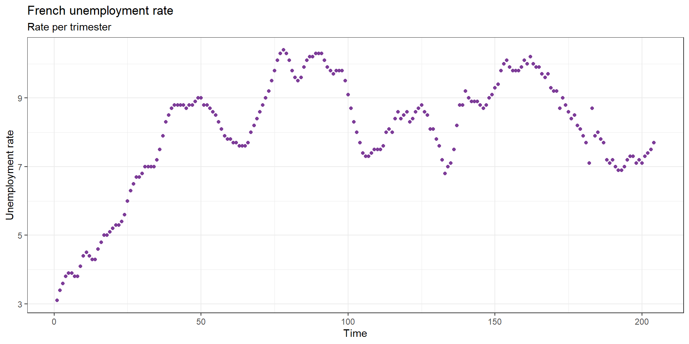
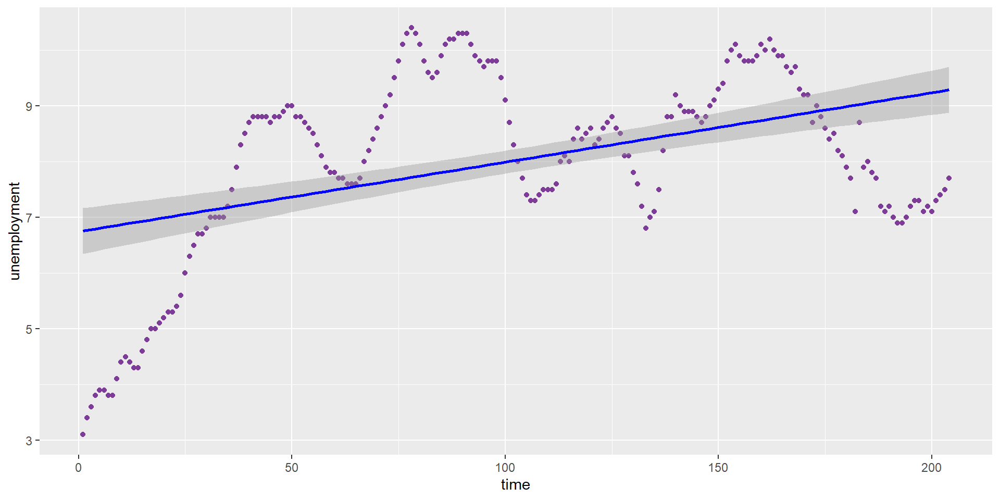
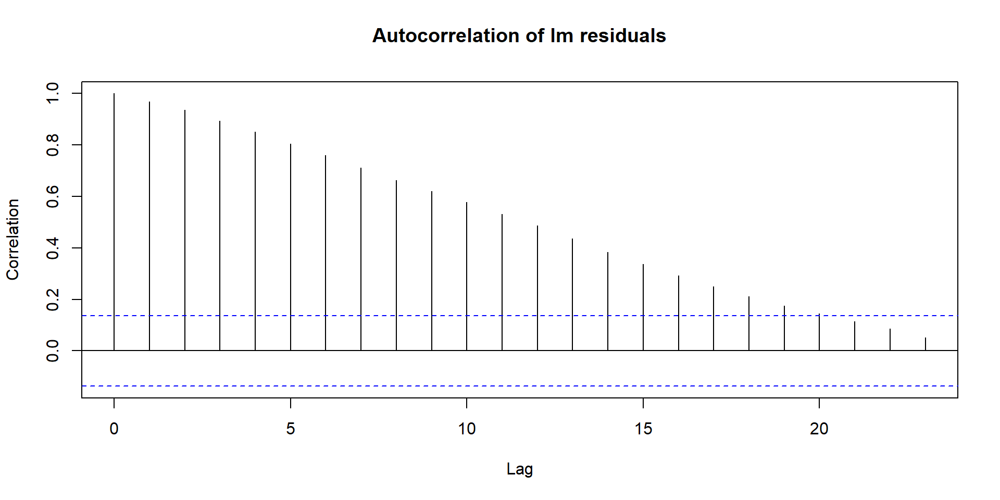
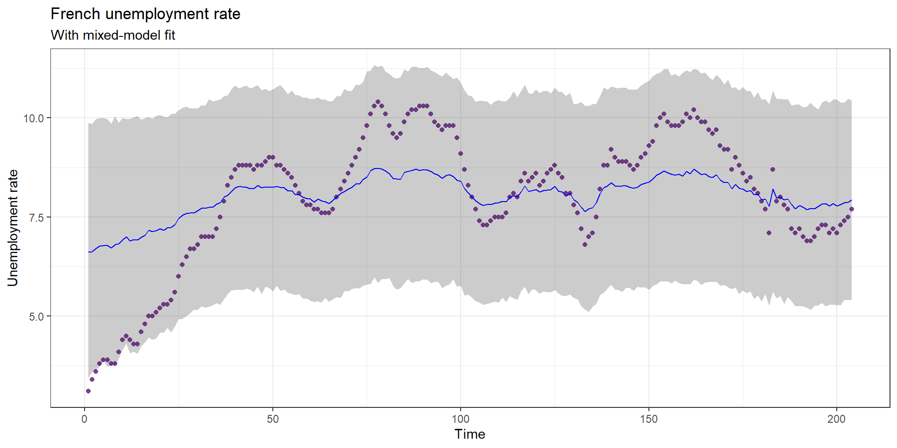
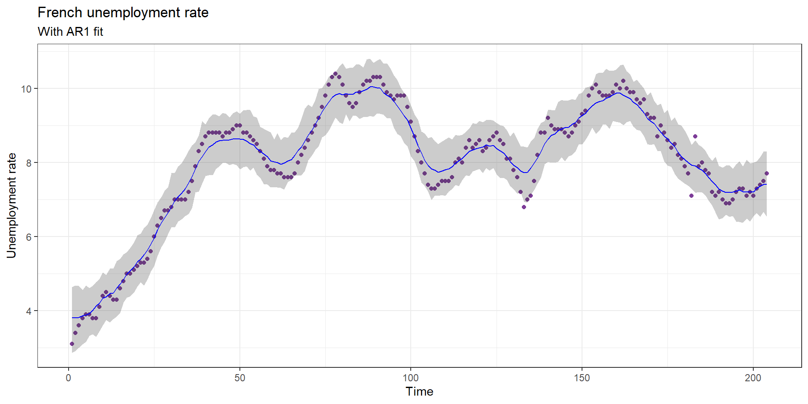
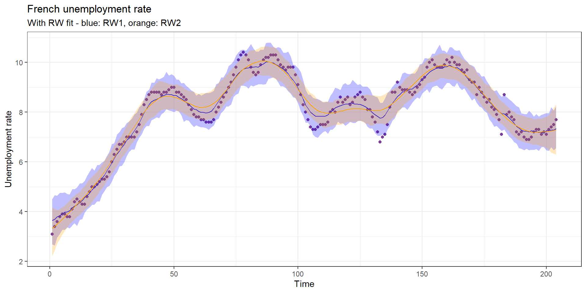

NULLLecture 2: Temporal structure
\[ \eta_i = \underbrace{\beta_0 + \beta_1 * X_i}_{\substack{\text{fixed} \\ \text{effects}}} + \underbrace{f_1(s_i)}_{\substack{\text{spatial} \\ \text{effect}}} + \underbrace{f_2(t_i)}_{\substack{\text{temporal} \\ \text{effect}}} + \underbrace{f_3(group_i)}_{\substack{\text{random} \\ \text{intercept}}} + ... \]
Unemployment rate in France:

How would you model the temporal dynamic in unemployment rate?
We could fit a simple linear trend to the data:
\[ unemployment_i = \beta_0 + \beta_1 * time_i + \epsilon_i; \epsilon_i \sim \mathcal{N}(0, \sigma_{\epsilon}²) \]
NULL
Limits of a simple linear trend fit are:

We could also add time in a random-intercept model:
\[ unemployment = \beta_0 + u_{t(i)} + \epsilon_i; u_{t(i)} \sim \mathcal{N}(0, \sigma_{t}²) \]

The mixed-effect model assumes that:
Various temporal structure model are available via INLA:
| Model | Assumption | inlabru syntax |
|---|---|---|
| AR1 | Each value depends on the previous | f(time, model=“ar1”) |
| RW1 | Increments are iid Gaussian | f(time, model=“rw1”) |
| RW2 | Second differences are iid Gaussian | f(time, model=“rw2”) |
| Seasonal | Periodic structure of period \(s\) | f(time, model=“seasonal”, season.length=s) |
| —— | ———– | —————- |
A gaussian regression model with an AR1 structure is defined by:
\[ y_{i} \sim \mathcal{N}(\eta_i, \sigma_{\epsilon}²) \] \[ \eta_i = \beta_0 + f_{t_i} \] \[ f_{t} = \phi * f_{t-1} + \nu_t; \nu \sim \mathcal{N}(0, \sigma_{\nu}²) \]
The AR1 has two parameters: (i) \(\phi\) the strength of the temporal autocorrelation - \(\phi \approx 0\) close to mixed-effect model, \(\phi \approx 1\) close to a random walk; (ii) \(\sigma_{\nu}\) the noise around the autoregressive signal.
Here is a AR1 model fitted to the unemployment data:

RW1 is defined as:
\[ \Delta x_i = x_i - x_{i-1} \sim \mathcal{N}(0, \sigma²) \] RW2 is defined as:
\[ \Delta²x_i = (x_i - x_{i-1}) - (x_{i-1} - x_{i-2}) \sim \mathcal{N}(0, \sigma²) \]
m_rw1 <- bru(unemployment ~ Intercept(1) + rw_field(time, model = "rw1"),
data = dat, family = "gaussian",
control.family = list(hyper = list(
prec = list(param = c(10, 100))
)))
m_rw2 <- bru(unemployment ~ Intercept(1) + rw_field(time, model = "rw2"),
data = dat, family = "gaussian",
control.family = list(hyper = list(
prec = list(param = c(10, 100))
)))
In inlabru we can combine these elements, for instance:
\[ \eta_i = \beta_0 + \underbrace{u_{t_i}}_{\text{rw2}} + \underbrace{a_{t_i}}_{\text{ar1}} + ... \]